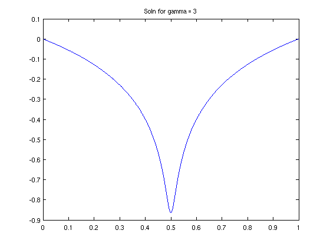
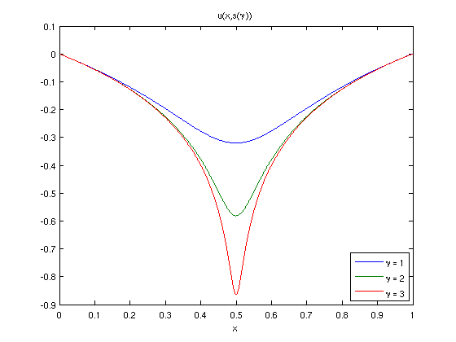
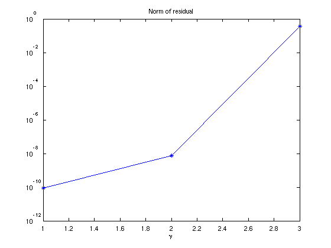
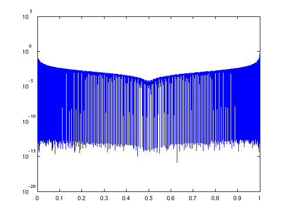
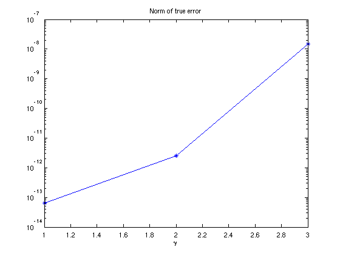
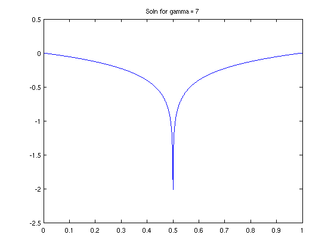
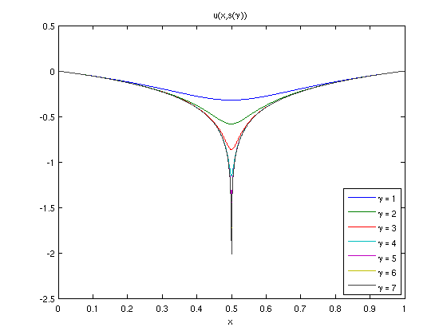
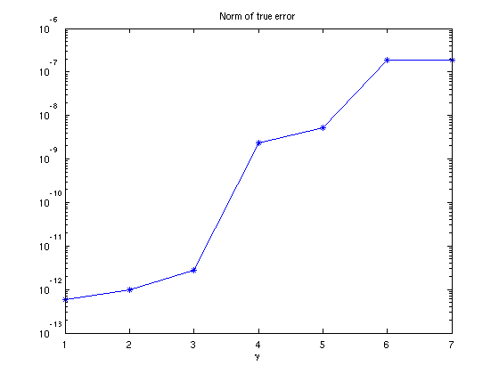

A parameter dependent ODE with breakpoints
Asgeir Birkisson, 25th January 2012
Contents
(Chebfun example ode/ParameterODE.m)
(This example is inspired by a discussion with Paul Constantine [1]).
Let the ODE
(a(x,s)u')' = 1, u(0) = u(1) = 0,
be given, where
a(x,s) = 1+4s(x^2-x).
and ' denotes the derivative w.r.t. x.
The exact solution can be shown to be
u(x,s) = 1/(8s) log(1+4s(x^2-x)) = 1/(8s) log(a(x,s))
It is clear that for s = 1, the solution has a singularity at x = 1/2. Here, we explore what happens when we solve the problems for values of s getting closer and closer to the critical value s = 1.
Setting up the problem
We begin by rewriting the differential equation to the form
a(x,s)u'' + a'(x,s)u' = 1
as it will be simpler to work with. We now set up anonymous functions to represent a and a'
a = @(x,s) 1 + 4*s*(x.^2-x); ap = @(x,s) 4*s*(2*x-1);
as well as an anonymous function for the exact solution, and the chebfun x on the interval [0,1]:
uexact = @(x,s) log(a(x,s)) / (8*s);
chebx = chebfun('x',[0 1]);
We can now set up a chebop to represent the BVP operator. However, since we want to explore what the solution looks like for different values of s, we define the chebop as an anonymous function as well (which output will be a chebop). The two last argument correspond to imposing homogenous Dirichlet conditions on the solution
Ns = @(s) chebop(@(x,u) a(x,s).*diff(u,2) + ap(x,s).*diff(u),[0 1], 0, 0);
Since we want to be taking values of s closer and closer to 1, we rewrite s in the following form:
s = 1-10^{-\gamma}
where \gamma takes integer values (giving s = 0.9, 0.99, 0.999, ...). We thus define s as an anonymous function
s = @(gamma) 1-10^(-gamma);
We can then obtain the solution of the problem for different values of gamma. Again, we use anonymous functions to achieve the desired effect.
ugamma = @(gamma) solvebvp(Ns(s(gamma)),1);
Here, the solvebvp method is another way to call the chebop backslash method. The second arguments corresponds to the right-hand side of the differential equation.
Solutions for different values of gamma
We're now all set to solve the problem for different values of gamma. We store the solution in a quasimatrix, as well as the norm of the residuals and the true errors:
gammas = 1:3; sols = chebfun; res = []; trueerror = []; for gamma = gammas solgamma = ugamma(gamma); plot(solgamma), title(['Soln for gamma = ', num2str(gamma)]), drawnow sols(:,gamma) = solgamma; res(gamma) = norm(feval(Ns(s(gamma)),solgamma)-1); trueerror(gamma) = norm(solgamma - uexact(chebx,s(gamma))); end
Here we are required to use the feval method to evaluate the residual since Matlab doesn't allowing double indexing, i.e. we can't call Ns(s(gamma))(solgamma).
Values of gamma up to 3 work fine, however, for gamma = 4, the solver fails to converge using 1025 points. We can see the lengths of the columns of the quasimatrix by displaying it:
sols
sols =
chebfun column 1 (1 smooth piece)
interval length endpoint values
[ 0, 1] 97 -6.5e-14 1.3e-17
vertical scale = 0.35
chebfun column 2 (1 smooth piece)
interval length endpoint values
[ 0, 1] 303 3.4e-12 0
vertical scale = 1.8
chebfun column 3 (1 smooth piece)
interval length endpoint values
[ 0, 1] 387 -2.5e-11 6.3e-17
vertical scale = 16
We plot the solutions together in a single plot
figure, plot(sols) title('u(x,s(\gamma))') legend('\gamma = 1', '\gamma = 2', '\gamma = 3','Location','SE') xlabel('x')
Looking at the entries in the vector storing the values of the residual reveals that they grow extremely fast with the value of gamma
figure, semilogy(gammas,res,'-*') title('Norm of residual'), xlabel('\gamma')
This is due to large contributions to the residual close to the boundaries of the interval, as the following plot reveals
figure,semilogy(abs(feval(Ns(s(3)),sols(:,3))-1))
However, the true error remains much better under control:
figure, semilogy(gammas,trueerror,'-*') title('Norm of true error'), xlabel('\gamma')
Introducing a breakpoint
The plot above of the solutions for different values of gamma reveals that the solution gets more and more difficult to represent close to x = 1/2 as gamma increases (i.e. s gets closer to 1). That makes a good case for introducing a breakpoint in the solution at x = 1/2, so rather than the solution being represented by a global chebfun, it is represented by two pieces.
We introduce a breakpoint in the operator as follows (notice the second argument to the chebop constructor):
Nsbreak = @(s) chebop(@(x,u) a(x,s).*diff(u,2) + ap(x,s).*diff(u), ...
[0 .5 1], 0, 0);
We now redefine the anonymous function which gives the solution
ugammabreak = @(gamma) solvebvp(Nsbreak(s(gamma)),1);
We're now all set to solve the problem using breakpoints for different values of gamma. Here, values of gamma up to 6 work with the default chebop settings, but we can obtain solutions for even larger values of gamma, up to 7, by increasing the number of gridpoints the solver can use (beyond 7, we run into problems with matrices being close to singular)
cheboppref('maxdegree',2^12+1) chebx = chebfun('x',[0 .5 1]); gammas = 1:7; sols = chebfun; res = []; trueerror = []; legs = []; for gamma = gammas solgamma = ugammabreak(gamma); plot(solgamma), title(['Soln for gamma = ', num2str(gamma)]), drawnow sols(:,gamma) = solgamma; res(gamma) = norm(feval(Nsbreak(s(gamma)),solgamma)-1); trueerror(gamma) = norm(solgamma - uexact(chebx,s(gamma))); legs = [legs; {['\gamma = ' num2str(gamma)]}]; % Used for legend later end
The length of the chebfuns are more modest now than before without breakpoints:
sols
sols =
chebfun column 1 (2 smooth pieces)
interval length endpoint values
[ 0, 0.5] 46 -1.4e-12 -0.32
[ 0.5, 1] 39 -0.32 0
Total length = 85 vertical scale = 0.32
chebfun column 2 (2 smooth pieces)
interval length endpoint values
[ 0, 0.5] 90 -1.2e-12 -0.58
[ 0.5, 1] 71 -0.58 9.6e-18
Total length = 161 vertical scale = 0.58
chebfun column 3 (2 smooth pieces)
interval length endpoint values
[ 0, 0.5] 126 4.1e-12 -0.86
[ 0.5, 1] 126 -0.86 -1.1e-16
Total length = 252 vertical scale = 0.94
chebfun column 4 (2 smooth pieces)
interval length endpoint values
[ 0, 0.5] 110 -9.4e-14 -1.2
[ 0.5, 1] 110 -1.2 1.1e-16
Total length = 220 vertical scale = 1.5
chebfun column 5 (2 smooth pieces)
interval length endpoint values
[ 0, 0.5] 186 -1.4e-12 -1.4
[ 0.5, 1] 186 -1.4 0
Total length = 372 vertical scale = 1.7
chebfun column 6 (2 smooth pieces)
interval length endpoint values
[ 0, 0.5] 253 2.4e-12 -1.7
[ 0.5, 1] 253 -1.7 -5.6e-17
Total length = 506 vertical scale = 2
chebfun column 7 (2 smooth pieces)
interval length endpoint values
[ 0, 0.5] 443 1.2e-11 -2
[ 0.5, 1] 443 -2 0
Total length = 886 vertical scale = 2.3
We plot all the solutions in a single plot
figure, plot(sols) title('u(x,s(\gamma))') legend(legs,'Location','SE') xlabel('x')
Again, the true error of the solutions remain pretty well under control
figure, semilogy(gammas,trueerror,'-*') title('Norm of true error'), xlabel('\gamma')
(But the residual norm gives infinity due to the jump in the residual at the breakpoint).
Reference [1] Paul Constantine's website: http://www.stanford.edu/~paulcon/